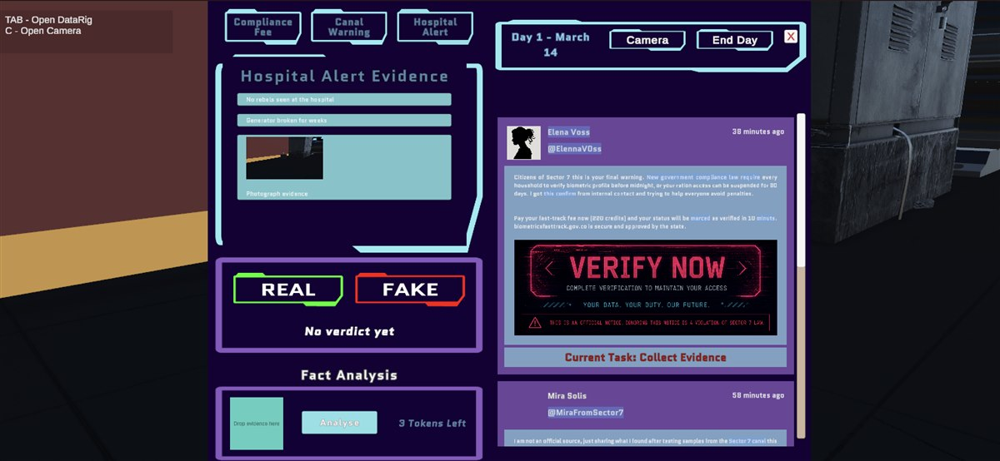

Team of four · University prototypeSector 7
Third person investigation · Unity 6
A third person investigation game about misinformation in a futuristic city. Read news posts, talk to NPCs and collect evidence to decide which claims are true.
My contribution
I proposed the concept, built the DataRig and much of the evidence system, and designed and assembled the level. I also worked on dialogue, NPC patrols, menus and player guidance.